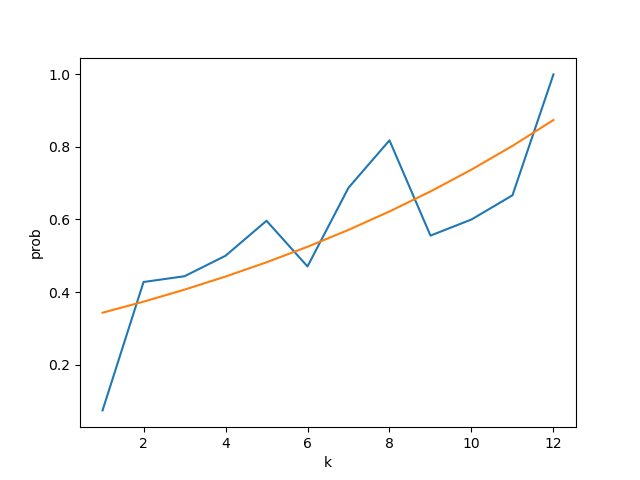

Repeater - 分析与设计
本文最后更新于：2022年7月13日 中午
从最开始想写一个群机器人，到现在也有陆续一个月了。现在这个bot的最好记录是在一个非常水的群里复读了一周后才被发现。至于为什么想要写这样一个bot，可能也是突然意识到自己经常在群里聊天也只是复读其他的话。
其实 Repeater 本身翻译过来是 中继器 的意思。
群聊消息分析
复读定义
🔁 由多人或单人连续发送相同内容的行为
- 发送者：可能是同一人，也可能是多个人
- 发送时间：连续发送，小概率不连续发送
- 发送内容：完全相同的消息（
暂时不考虑劣质复读的情况）
可复读消息
🔁 重复该消息不会被认为是“不合常理的（unreasonable）”，被认为是人类能做出的行为。
例如：？、好、yyds、😰、不亏、草、哈哈哈、笑死、开摆！、呜呜
或者更长的例子：
- 居然不复读
- 一睁眼怎么又周一了
- i hope🙏
- 群友能不能学会然后合宿做给我吃
- 我有[Face: 流泪][Face: 流泪][Face: 流泪][Face: 流泪][Face: 流泪]
- ……
基础数据分析
群消息统计
群消息中连续重复的消息数量的统计
群消息的时间分布统计
时间单位是分钟，以北京时间（GMT+8）为标准
可复读消息统计
- 当前进入可复读消息集合的规则：100条消息的滑动窗口中出现不少于3次
- 所有进入过可复读消息集合的消息：758条
- 标注后的有价值的复读消息：
- Golden（在多个群出现过）10条：确实、😄、？、乐、好似喵、呜呜、好、听不懂，说人话、草、[图片]
- Silver（只在一个群出现过，但成功引发过连续的复读事件）116条
以下特征的评价标准将以上述10+116=126条作为分类任务的正例。
可复读消息的特征
时间滑动窗口中的频次（TF模式）
使用 时间滑动窗口中的频次 对可复读消息的分布进行建模，包含以下参数：
- 滑动窗口的时间大小：$T$
- 滑动窗口中的最小命中频次：$F$
由不知道哪个时间单位更好，所以分为“秒级别”与“分钟级别”
一票否决方案 表示模型如果不能召回所有的 Golden消息，则该模型的 F1 分数为0。没有该限制则称为 标准方案
| 级别 | 方案 | T | F | F1 |
|---|---|---|---|---|
| 秒级别 | 一票否决 | 140秒 | 3次 | 0.2550 |
| 秒级别 | 标准 | 10秒 | 3次 | 0.3333 |
| 分钟级别 | 一票否决 | 600秒（10分钟） | 3次 | 0.2214 |
| 分钟级别 | 标准 | 600秒（10分钟） | 4次 | 0.2673 |
TF模式一票否决方案下较难预测的Golden消息（8）：确实、呜呜、乐、好、😄、 听不懂，说人话、好似喵、[图片]
消息滑动窗口中的频次（WF模式）
不考虑消息的发送时间，使用 基于消息数量的滑动窗口中的频次 对可复读消息的分布进行建模，包含以下参数：
- 滑动窗口的消息数量：$W$
- 滑动窗口中的最小命中频次：$F$
| 方案 | W | F | F1 |
|---|---|---|---|
| 一票否决 | 80 | 4 | 0.1114 |
| 标准 | 40 | 23 | 0.2126 |
- WF模式一票否决方案下较难预测的Golden消息（2）：听不懂，说人话、好似喵
被连续发送的次数（F模式）
使用 连续的相同消息的次数 对可复读消息的分布进行建模，包含以下参数：
- 连续发送的最小次数：$F$
| 方案 | F | F1 |
|---|---|---|
| 一票否决 | - | 0 |
| 标准 | 3 | 0.5508 |
消息文字长度
把图片、转发、at等特殊消息视为长度为1的消息。统计可复读消息中占所有消息的比例。
可以发现好像并没有什么严格的规律，概率都不到0.5%
结论
- 绝大部分可复读消息都在所有消息中连续多次出现。
- 基于时间的滑动窗口方案（TF模式）比基于数量的滑动窗口方案（WF模式）性能更高，但两方案相比连续发送次数方案（F模式）存在 准确率 较低的情况。
- 无法通过消息文字长度预测是否为可复读消息。
复读行为的特征
复读是否发生的概率
基础概率复读（p模式）
设消息列表中 一个可复读消息 后的消息是 与前一个相同的消息 的概率为 $p=0.1198$
随机执行测试（10000次）结果如下：
| 最小值 | 最大值 | 平均值 | 中位数 |
|---|---|---|---|
| 0.7105 | 0.7443 | 0.7281 | 0.7281 |
指数累进概率复读（pd模式）
设消息列表中 一个可复读消息 后的第一个消息是同一个可复读消息的概率为 $p$。前$k-1$个消息都是同一个可复读消息的情况下，第$k$个消息是同一个可复读消息的概率为$p \cdot d^{k-1}$。先统计在不同的$k$ 下的概率情况。
| k | 条件概率 | k | 条件概率 | k | 条件概率 |
|---|---|---|---|---|---|
| 1 | 0.0737 | 5 | 0.5965 | 9 | 0.5556 |
| 2 | 0.4276 | 6 | 0.4706 | 10 | 0.6 |
| 3 | 0.4436 | 7 | 0.6875 | 11 | 0.6667 |
| 4 | 0.5 | 8 | 0.8182 | 12 | 1 |
用指数函数拟合这一概率，得到
随机执行测试（10000次）结果如下：
| 最小值 | 0.6021 |
|---|---|
| 最大值 | 0.6397 |
| 平均值 | 0.6195 |
| 中位数 | 0.6195 |

负指数累进复读模式（q模式）
设消息列表中 一个可复读消息 后的第一个消息是同一个可复读消息的概率为 $1-q$。前$k-1$个消息都是同一个可复读消息的情况下，第$k$个消息是同一个可复读消息的概率为$1-q^k$。拟合这一概率，得到
随机执行测试（10000次）结果如下：
| 最小值 | 0.7595 |
|---|---|
| 最大值 | 0.7904 |
| 平均值 | 0.7751 |
| 中位数 | 0.7751 |
复读间隔时间的分布
TBD
结论
- 负指数累进复读模式（q模式）可能更加符合实际复读行为
- 不同的累进复读模式的效果差距很大，可能存在更好的累进复读方案。
- 基础概率复读的阈值应较低
进一步分析计划
- 目前的分析都是从实验的角度进行的。不知是否可以进一步使用统计学知识从建模的角度进行分析。
- 现有方案对可复读消息的判断性能较低。
Roadmap
- [x] 基础概率复读
- [x] 冷却时间
- [x] 引入Mongo
- [x] 配置支持
- [x] 多群支持（可发布）
- [x] 支持图片复读
- [x] 关键词排除
- [x] 累进复读概率
- [ ] 随机丢弃已保存消息（idea by 719）
- [ ] 多人复读判断引入